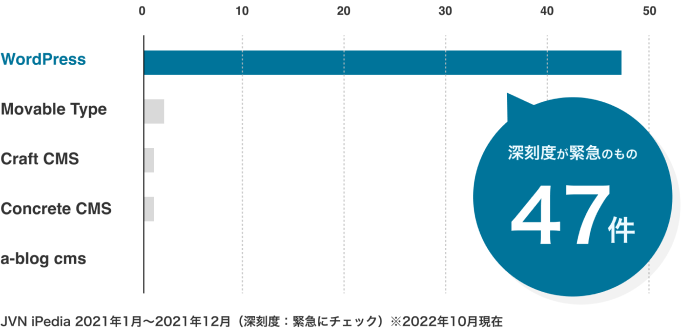
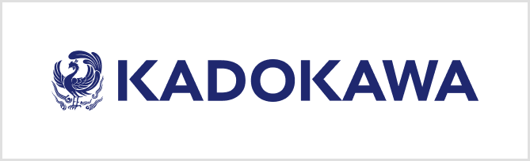
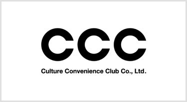
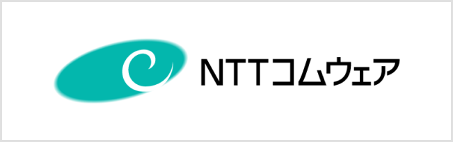
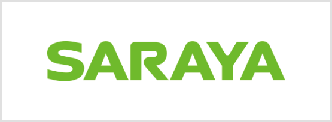
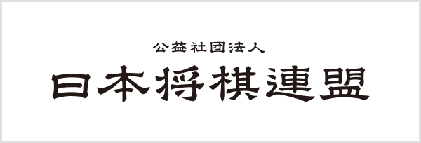
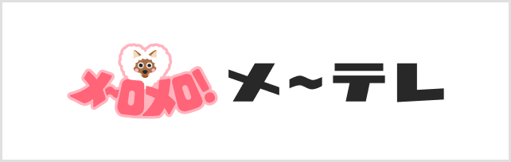
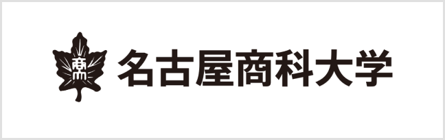

CMS運用の悩み
CMSの利用シェア率が高いから...
無料だから...といった理由で
CMSを
選んでいませんか？
日本におけるCMS利用では「WordPress」が圧倒的なシェアとなっており、無料で利用できるハードルの低さから初めに導入するCMSとして選ばれやすく、普及し続けています。
その反面、緊急性の高い脆弱性に関する問題が多く報告されています。
安全に利用するために最新版の利用が求められていますが、アップデートには大きなコストと作業負担がかかることから、リスクを承知しながら利用し続ける企業もあるようです。

こんな問題抱えていませんか？
-
すぐにアップデートできない
WordPressは基本的には有志によって開発されている「プラグイン」で機能拡張をして構築するCMSですが、プラグイン間の連携は保証されていません。これにより、本体アップデート時にプラグインとのトラブルがみられるケースがあり、セキュリティ対策として最新版の利用が推奨されているにも関わらず、古いバージョンを使い続ける企業もあるようです。
-
特定のスキルを持つ人しか修正できない
各種CMSは世の中の技術の進歩とともに日々進化を遂げています。それにより、取り扱うために求められるスキル差が開いているのも事実です。特にカスタマイズにプログラミングが必要なCMSは、以前よりも必要な知識の差が開いています。
これにより、一定のスキルを持つ人しかメンテナンスできなくなってしまう状況を作り出してしまうことがあります。 -
システムをうまく使いこなせない
オープンソースのCMSの場合は、ベンダーによるサポートがないことも多く、Webサイトの構築や運用には一定のスキルが求められます。
機能は十分あったとしても使いこなせていないケースがあるため、CMSを導入していたとしても更新作業を制作会社や担当部署に依頼するケースや、別途更新マニュアルを別途納品することが多々あるようです。
自社に適切なCMSについて
考え直してみませんか？
「どんなシステムを構築したいのか」「どんなサイト運用をしたいのか」。
まずはWebサイトに必要な条件を洗い出してみましょう。
お悩みに合わせて適切な機能を提案し、必要であれば「もし a-blog cms で実現するなら」という具体案まで担当スタッフがご案内いたします。
あくまでお客様の最適解を見つけ出すお手伝いをさせていただけたらと思っておりますので、弊社から無理な営業を行うことはありません。
お気軽にご相談ください。
※ 真摯にご相談に向き合うため、弊社から無理な営業を行うことはありません。
a-blog cmsのメリット
a-blog cms なら
安心して導入できるポイント
-
開発元による継続したサポートを受けられる
POINT1わからないところがあれば開発元に質問し、正式な回答を受けることができます。利用者様の状況や問題に合わせて、解決するまで個別サポートしますのでビギナーの方も安心して導入していただけます。
-
必要なスキルを最小限にしてローコード開発（※）ができるCMS
POINT2テンプレートはHTMLとCSS、a-blog cms が用意している独自記法を使って構築します。必要なスキルが最小限なので、デザイナーでも、ディレクターでもレイアウトの変更や修正が可能に。エンジニアの工数削減にも繋がりやすいです。
-
比較的安心してバージョンアップできる
POINT3CMS本体のデフォルト機能が充実しているため、拡張アプリに頼ることなく基本的なWebサイトを作成できます。その結果、CMSと拡張アプリの不一致によるトラブルが少なくなり、比較的安心してバージョンアップすることが可能です。
-
サイトの規模が大きくなってもそのまま利用できる
POINT4導入実績には小規模なサイトもありますが、数十万件の膨大な規模でも快適に利用できます。コンテンツ量が多くなる見込みがある場合は小規模からスタートし、どんどんコンテンツを充実させていくことが可能です。
-
脆弱性の報告が少ない
POINT5JVN iPediaによると、a-blog cms の2021年の1年間の脆弱性に関する緊急性の高い報告は0件です。
コアのプログラムは難読化されており、脆弱性に関する報告は全体的に少ないです。
※ ローコードとは？
a-blog cms はローコード開発ツールです。可能なかぎりソースコードを書かずに、品質の高いWebサイト/システム開発ができる開発手法の1つです。従来のシステム開発と比較しても短い開発期間で、高品質かつ安定したシステム開発を行うことが可能です。 IT人材不足の中、プログラミング経験の浅い方でも品質の良い開発ができ、開発期間と開発コストを削減できることから、近年のシステム開発において注目を集めています。
-
思い通りの
レイアウトを
実現できる -
技術的な
学習コストを
削減できる -
デザイナーが
一人で
完成できる -
Web担当者が
ソースコードを
修正できる -
エンジニアの
工数削減に
つながる -
担当者間で
スキル差を
生みにくい
実績
さまざまな企業・団体に
a-blog cms を
ご利用いただいています
- 
- 
- 
- 
- 
- 
- 
サイト公開まで弊社がフルサポートします
解決方法のメールサポートはもちろん、
そのほかにも弊社では以下のような実作業を受け付けております。
自社でリソースを確保することが難しい場合は
弊社で作業を負担できますので、まずは一度ご相談ください。
-
デザイン
※実作業が発生する場合は費用が発生いたします。詳しくは無料相談の際に担当スタッフへご相談ください。
※ 真摯にご相談に向き合うため、弊社から無理な営業を行うことはありません。
a-blog cms について
a-blog cms は日本製のローコード開発が可能なCMSです。ローコード開発により開発コストをグッと削減し、高品質なウェブサイトを制作できます。
小規模〜大規模サイトまで制作が可能で、膨大な情報量に耐えられます。
安全なWebサイト運用を第一に、最新バージョンを保ち続けられる仕組みを提供します。
運営会社情報
- 運営会社
- 有限会社アップルップル
- 設立
- 2004年9月
- 住所
- 愛知県名古屋市中村区名駅3-18-5 モンマートビル 5F
- 代表者
- 山本 一道
無料CMS乗り換え相談
じっくりとヒアリングした上で、お悩みに合わせて「もしa-blog cmsで解決するなら...」の方法を提案いたします。
あくまでお客様の最適解を見つけ出すお手伝いをさせていただけたらと思っておりますので、弊社から無理な営業を行うことはありません。お気軽にご相談ください。
※ 真摯にご相談に向き合うため、弊社から無理な営業を行うことはありません。